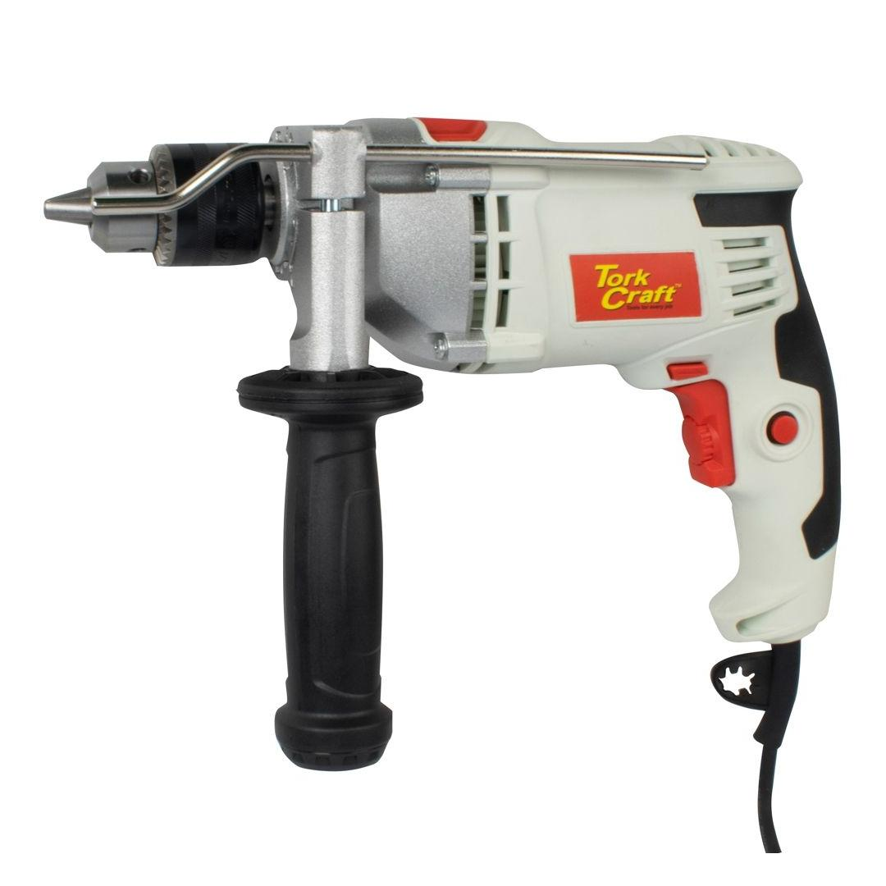

TCID0850

Max RPM: 0 - 3000
Voltage: 220-240 (50Hz)
Wattage: 850
Application:
Drilling into various steel, plastic, wood and masonry using various drill bits and accessories.
Accessories Included
Installing Accessory Bits
Use the provided chuck key to either lock/unlock. Turn the chuck anti-clockwise until the drill chuck opening is large enough to accept the accessory. Insert the accessory into the drill chuck. Turn the ring clockwise until the tool is clamped tightly. Use the chuck key to properly lock the chuck.
Installing Auxiliary handle
To mount the Auxiliary handle, loosen the screw on the handle by turning the plastic part anti-clockwise Mount the handle over the chuck collar till it is flush with the flat surface of the front of the drill. Turn the handle plastic part clockwise to clamp it in place.
Trigger lock
To lock the trigger, depress the lock in button situated at the side of the handle with one hand, while the other hand is depressing the trigger.
Rotation setting
Reverse: to select reverse rotation, push the lever to the right side of the drill Forward: to select forward rotation, release the on/off switch and push the lever to the left side of the tool.
WARNING: Do not operate power tools in explosive atmospheres, such as in the presence of flammable liquids, gasses or dust work conditions. Power tools create sparks that may ignite the dust or fumes or cause injuries or damage to the surrounding person or object. Keep bystanders away while operating a power tool, distractions can lead to potential loss of control Always ensure the switch is in the off-position before picking up or carrying the tool. Always use both hands to hold the tool when operating. Never lay the Drill down before the accessory has come to a complete stop. The spinning accessory may grab the surface and pull the power tool out of your control or potentially damage the tool and work surface. Always ensure there is sufficient light and avoid working in dark and clustered areas. Regularly clean the drills air vents, by using an air duster. (Disconnect tool from the main power supply)